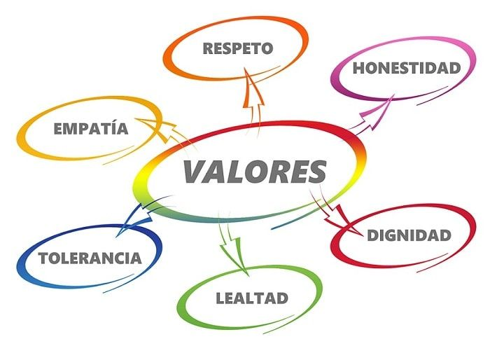

Es una rama de la filosofía que estudia el comportamiento humano desde una perspectiva ética, moral y racional. Busca comprender por qué las personas actúan de cierta manera, qué influencias tienen (como la cultura, la educación, o la moral) y qué principios deben guiar nuestras acciones para vivir en armonía con los demás.
John B. Watson: Considerado el fundador del conductismo, propuso que la conducta podía ser moldeada mediante la manipulación de estímulos ambientales según Study.com.
B.F. Skinner: Desarrolló el conductismo radical, enfocándose en el análisis funcional de la conducta y sus relaciones con el ambiente.
¿Qué son los valores morales?
Los valores humanos son como el ADN de nuestra ética y moral, una especie de código compartido por culturas de todo el mundo que nos dice lo que es bueno y correcto. Son la brújula que nos permite convivir de manera justa y armoniosa con quienes nos rodean. Aunque hablamos de los valores de una persona, en realidad, los valores humanos tienen un carácter universal que trasciende fronteras.
Jordi Quiodbach lo explica así: “Las investigaciones precedentes indican que existen dos grupos de valores morales: los vinculantes, que gobiernan el comportamiento en grupo, y los individualizadores, que se refieren a los derechos y las libertades personales.

Los Valores
1. Amistad – La amistad es una forms de afecto de una persona a otra. Los amigos nos quieren sin condiciones tal u como somos
2. Tolerancia – Es el respeto o consideracion hacia las opiniones gustos, creencias, etc. de los demas, aunque sean diferentes a las nuestras.
3. Solidaridad– Se manifiesta cuando dos o mas personas se unen y colaboran mutuamente para conseguir el bien para unas personas, pensando den el bien común.
4. Honestidad – Se manifiesta cuando la persona se comporta de una manera transparentecon los demás; no oculta nada.
5. Perseverancia – Significa mantenerse constante en la persecucion de lo comenzado.
6. Prudencia – Consiste en discernir lo que es bueno o malo, actuando con moderación y cautela.
7. Generosidad – La persona generosa tiene la capacidad de ofrecer a otros lo más preciado de sí mismo.
8. Lealtad – Las persona leales tienen un alto sentido del compromiso y cumplen con su palabra.
9. Humildad – Es la creencia que tenemos acerca de lo que somos, de nuestras fortalezas y debilidades como seres humanos
10. Dignidad – Más que un valor es una condición, hacia uno mismo y hacia los demás.
11. Libertad – L a verdadera libetad consiste en el dominio de si mismo.
12. Justicia – Implica dar a quien lo que le corresponde. Es conocer, respetar y hacer valer los derechos de las persona.
13. Fortaleza – Es la capacidad que nos permite mantenernos fieles a nuestras conviccionesy hacerles frente, con firmeza y energia, a las difeerntes situaciones con que nos encontramos en la vida diaria.
14. Gratitud – Es cuando uan persona se siente en deuda con otra persona, por haber recibido algún bien.
15. Paz - ES el fruto de la sana convivencia entre las personas.
16.Responsabilidad – Es la capacidad de cumplir con mis deberes y compromisos.
17. Servicio – Es la capacidad de reconocer las las necesidades propías y las necesidades de los demás.
18. Igualdad – Todos somos iguales dignidad y derechos, sin importa el color, religión, posición económica, raza, sexo o ideología.
19. La vida – El derecho a la vida conlleva al respeto de la dignidad humana. Del valor de la vida desprenden todos los derechos humanos.
20. Respeto – Es la base fundamental de la convivencia sana y pacífica entre los miembros de una sociedad.